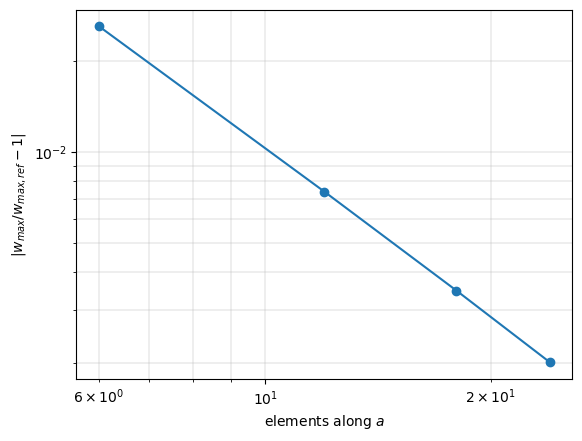
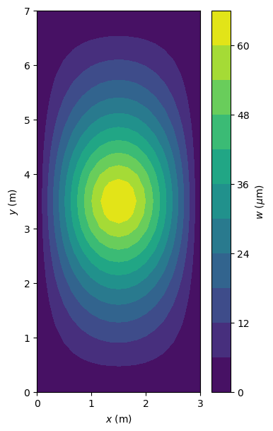

Linear static analysis of a plate#
A simply supported plate of Quad4 elements under a central point load. The largest normal displacement \(w\) is compared with the Navier solution of the Kirchhoff plate of Timoshenko and Woinowsky-Krieger (1959), on four meshes, and the internal forces with the external forces and the support reactions. The steps follow Overview and workflow; the theory of the analysis is in Linear static analyses and Boundary conditions and prescribed
displacements, that of the element in Quad4: assumed transverse shear strains (MITC4). The full references are at the end of the notebook.
[1]:
%matplotlib inline
import numpy as np
import matplotlib.pyplot as plt
from scipy.sparse import coo_matrix
from pyfe3d import DOF, DOUBLE, INT, Quad4, Quad4Data, Quad4Probe
from pyfe3d.shellprop_utils import isotropic_plate
from pyfe3d.solver import solve
The problem and the reference value#
The plate has the sides \(a = 3\) m along \(x\) and \(b = 7\) m along \(y\), the thickness \(h = 0.005\) m, \(E = 200\) GPa and \(\nu = 0.3\). The edges have \(w = 0\) with the rotations free, and the in-plane translations of every node are held, which leaves the bending problem of the flat plate. A unit load \(P\) acts at the centre.
For the Kirchhoff plate of bending stiffness \(D = E h^3/(12 (1 - \nu^2))\), the Navier double series of the deflection under a point load, Eq. (133) of Timoshenko and Woinowsky-Krieger (1959, Art. 29, p. 111), evaluated at the centre and summed over one index in their Art. 34, p. 143, Eq. (147), is
The series converges fast; it is truncated at \(m = 79\):
[2]:
a = 3.
b = 7.
h = 0.005 # m
E = 200.e9
nu = 0.3
P = 1.
D = E*h**3/(12*(1 - nu**2))
m = np.arange(1, 80, 2)
alpha_m = m*np.pi*b/(2*a)
alpha = np.sum((np.tanh(alpha_m) - alpha_m/np.cosh(alpha_m)**2)/m**3)/(2*np.pi**3)
wmax_ref = alpha*P*a**2/D
print('alpha = %.6f' % alpha)
print('w_max = %.6e m' % wmax_ref)
alpha = 0.016785
w_max = 6.598363e-05 m
For \(b/a = 7/3\) the coefficient lies between the values 0.01651 and 0.01690 of their Table 23 for \(b/a = 2\) and 3.
Quad4 is a shear-deformable (Mindlin) element, whereas the reference is the Kirchhoff plate. Under a point load the transverse shear deflection of the Mindlin plate is logarithmically singular: the shear part of its Navier series, \(\frac{4 P}{\pi^2 a b A_{55}} \sum_{m, n} \left[(m/a)^2 +
(n/b)^2\right]^{-1}\), diverges. With \(a/h = 600\) it is nevertheless small: truncated at the wavenumbers that the meshes below resolve, it adds \(2.0
\times 10^{-5}\) to \(3.6 \times 10^{-5}\) of the reference deflection.
The model#
The function below builds a mesh of nx by ny nodes. Each element receives the node ids n1, ..., n4, counterclockwise about the normal \(+z\), the positions c1, ..., c4 of their dofs in the global vectors and init_k_KC0, its position in the sparse arrays of \(\boldsymbol{K}_{C0}\); K6ROT is the stiffness of the drilling rotation. The boundary conditions are the Boolean arrays bk (known dofs) and bu = ~bk, and the free dofs are solved with
pyfe3d.solver.solve:
[3]:
def solve_plate(nx, ny):
data = Quad4Data()
probe = Quad4Probe()
xtmp = np.linspace(0, a, nx)
ytmp = np.linspace(0, b, ny)
xmesh, ymesh = np.meshgrid(xtmp, ytmp)
ncoords = np.vstack((xmesh.T.flatten(), ymesh.T.flatten(),
np.zeros(nx*ny))).T
x = ncoords[:, 0]
y = ncoords[:, 1]
ncoords_flatten = ncoords.flatten()
nids = 1 + np.arange(ncoords.shape[0])
nid_pos = dict(zip(nids, np.arange(len(nids))))
nids_mesh = nids.reshape(nx, ny)
n1s = nids_mesh[:-1, :-1].flatten()
n2s = nids_mesh[1:, :-1].flatten()
n3s = nids_mesh[1:, 1:].flatten()
n4s = nids_mesh[:-1, 1:].flatten()
num_elements = len(n1s)
N = DOF*nx*ny
KC0r = np.zeros(data.KC0_SPARSE_SIZE*num_elements, dtype=INT)
KC0c = np.zeros(data.KC0_SPARSE_SIZE*num_elements, dtype=INT)
KC0v = np.zeros(data.KC0_SPARSE_SIZE*num_elements, dtype=DOUBLE)
prop = isotropic_plate(thickness=h, E=E, nu=nu)
quads = []
for k, (n1, n2, n3, n4) in enumerate(zip(n1s, n2s, n3s, n4s)):
quad = Quad4(probe)
quad.n1, quad.n2, quad.n3, quad.n4 = n1, n2, n3, n4
quad.c1 = DOF*nid_pos[n1]
quad.c2 = DOF*nid_pos[n2]
quad.c3 = DOF*nid_pos[n3]
quad.c4 = DOF*nid_pos[n4]
quad.init_k_KC0 = k*data.KC0_SPARSE_SIZE
quad.K6ROT = 100.
quad.update_rotation_matrix(ncoords_flatten)
quad.update_probe_xe(ncoords_flatten)
quad.update_KC0(KC0r, KC0c, KC0v, prop)
quads.append(quad)
KC0 = coo_matrix((KC0v, (KC0r, KC0c)), shape=(N, N)).tocsc()
# w = 0 at the edges, u = v = 0 everywhere
bk = np.zeros(N, dtype=bool)
edges = np.isclose(x, 0.) | np.isclose(x, a) | np.isclose(y, 0) | np.isclose(y, b)
bk[2::DOF] = edges
bk[0::DOF] = True
bk[1::DOF] = True
bu = ~bk
# point load at the centre node
fext = np.zeros(N)
fext[2::DOF][np.isclose(x, a/2) & np.isclose(y, b/2)] = P
u = np.zeros(N)
u[bu] = solve(KC0[bu, :][:, bu], fext[bu])
return dict(xmesh=xmesh, ymesh=ymesh, x=ncoords_flatten, quads=quads,
prop=prop, KC0=KC0, bk=bk, bu=bu, fext=fext, u=u,
w=u[2::DOF].reshape(nx, ny).T, num_elements=num_elements)
Convergence of the central deflection#
The deflection converges from below to the reference, as the element is stiffer than the continuum:
[4]:
meshes = [(7, 11), (13, 21), (19, 31), (25, 41)]
print('%-9s %14s %14s %11s' % ('elements', 'w_max (m)', 'reference (m)',
'rel. diff.'))
errors = []
for nx, ny in meshes:
res = solve_plate(nx, ny)
wmax = res['w'].max()
errors.append(wmax/wmax_ref - 1)
print('%-9s %14.6e %14.6e %11.2e' % ('%dx%d' % (nx - 1, ny - 1), wmax,
wmax_ref, errors[-1]))
elements w_max (m) reference (m) rel. diff.
6x10 6.426015e-05 6.598363e-05 -2.61e-02
12x20 6.549552e-05 6.598363e-05 -7.40e-03
18x30 6.575388e-05 6.598363e-05 -3.48e-03
24x40 6.585078e-05 6.598363e-05 -2.01e-03
[5]:
num_el_x = np.array([nx - 1 for nx, ny in meshes])
plt.loglog(num_el_x, np.abs(errors), 'o-')
plt.xlabel('elements along $a$')
plt.ylabel(r'$|w_{max}/w_{max,ref} - 1|$')
plt.grid(True, which='both', lw=0.3)
plt.show()

Equilibrium: internal forces and reactions#
On the 18 x 30 mesh, update_fint gives, element by element, the internal force vector \(\boldsymbol{F}_{int} = \boldsymbol{K}_{C0} \boldsymbol{u}\) from the displacements given to the probe with update_probe_ue. It must equal the external force vector completed at the constrained dofs by the reactions \(\boldsymbol{R}_k = \boldsymbol{K}_{C0_{ku}} \boldsymbol{u}_u\), the second block row of the partitioned system of Boundary conditions and prescribed
displacements, with \(\bar{\boldsymbol{u}}_k = \boldsymbol{0}\) and no load at the constrained dofs. The vertical reactions add up to \(-P\):
[6]:
res = solve_plate(19, 31)
u, bk, bu = res['u'], res['bk'], res['bu']
fint = np.zeros_like(u)
for quad in res['quads']:
quad.update_probe_xe(res['x'])
quad.update_probe_ue(u)
quad.update_fint(fint, res['prop'])
f = res['fext'].copy()
f[bk] = res['KC0'][bk, :][:, bu] @ u[bu]
print('max |F_int - (F_ext + R)| = %.2e N' % np.abs(fint - f).max())
print('sum of the vertical reactions = %.10f N' % f[2::DOF][bk[2::DOF]].sum())
max |F_int - (F_ext + R)| = 3.10e-11 N
sum of the vertical reactions = -1.0000000003 N
Normal displacement#
[7]:
fig, ax = plt.subplots(figsize=(4, 7))
ax.set_aspect('equal')
cs = ax.contourf(res['xmesh'], res['ymesh'], res['w']*1e6, levels=10)
fig.colorbar(cs, label=r'$w$ ($\mu$m)')
ax.set_xlabel('$x$ (m)')
ax.set_ylabel('$y$ (m)')
plt.show()

References#
Timoshenko, S. and Woinowsky-Krieger, S., Theory of Plates and Shells, 2nd ed., McGraw-Hill, 1959.